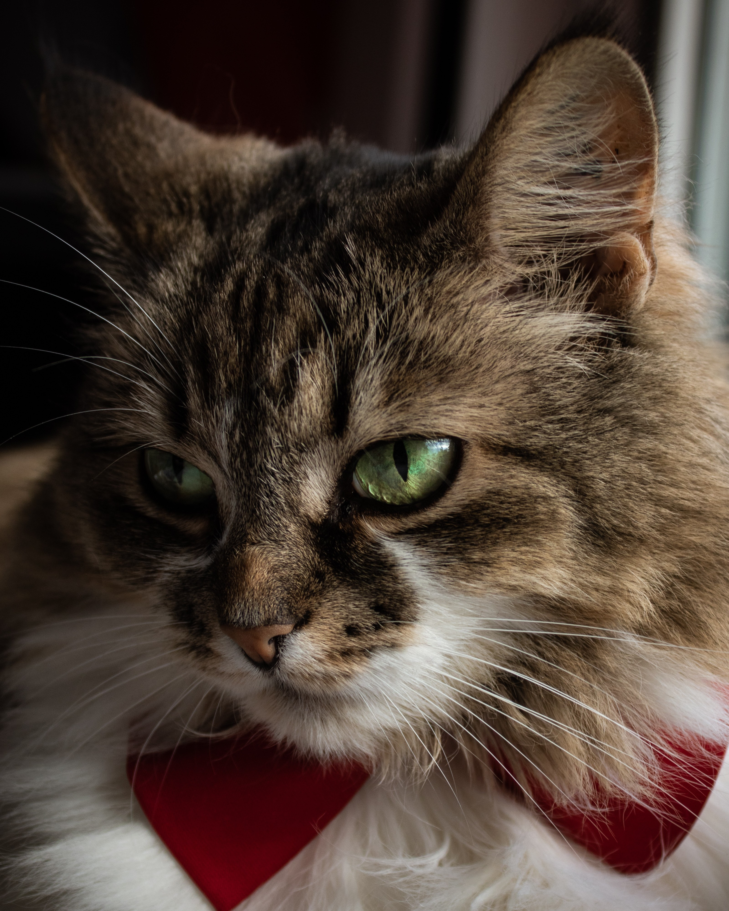

[ 00 ] - Portfolio
Ellen
Sällberg_
[ 01 ]
- UX Engineer
- Designer
- Programmerare
Jag kombinerar design och teknik för att skapa användarvänliga och genomtänkta digitala upplevelser som fungerar för alla.
[02] Projekt kommer snart

Stockholm
[03] Om Mig
Jag heter Ellen, är 22 år och pluggar till UX Engineer på Chas Academy i Stockholm. Jag är en teknik- och designnörd från Västerås med ett stort intresse för datorer, gitarrer, spel och katter.
Mitt intresse för programmering började med en uppsats om webbtillgänglighet och WCAG, där jag undersökte hur tillgängliga VGR:s folkhögskolors webbplatser var. Det ena ledde till det andra, och snart gick jag en fem månader lång bootcamp i frontendutveckling.
På bilden bredvid ser du Sockan, katten jag växte upp med. Jag är ganska säker på att hon minns mig, men efter att jag flyttade till Göteborg verkar hon ha bestämt sig för att ignorera mig. Vissa svek sitter tydligen djupare än andra.
[04] Kompetenser
Design
- Figma
- FigJam
- Prototyping
- Användar Testning
Engineering
- React
- HTML
- CSS
- JavaScript
- Node.js
Utveckling
- Agilt arbetssätt
- Tillgänglighet (WCAG)
- Git
- Github
[05]Vi bygger tillsammans!
Har du ett spännande projekt, en jobbmöjlighet eller bara en idé du vill bolla? Hör gärna av dig, jag är alltid öppen för nya samarbeten och roliga utmaningar!
-
Email
-
Linkedin
-
Github